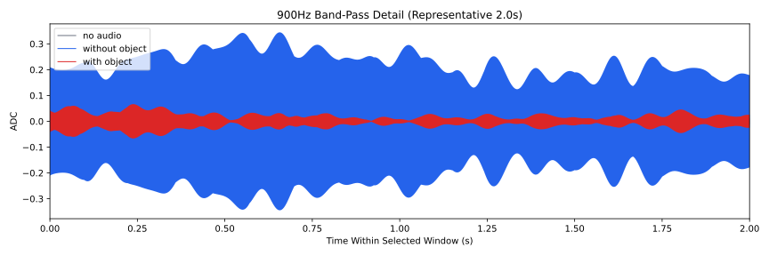
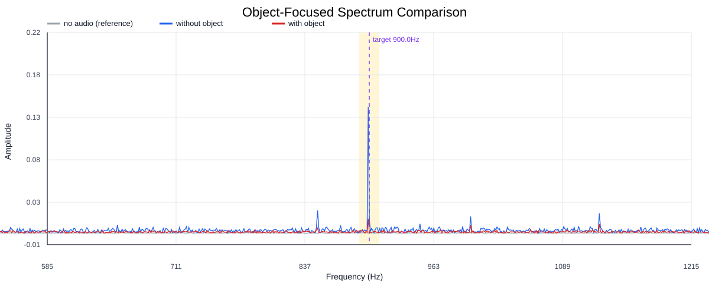
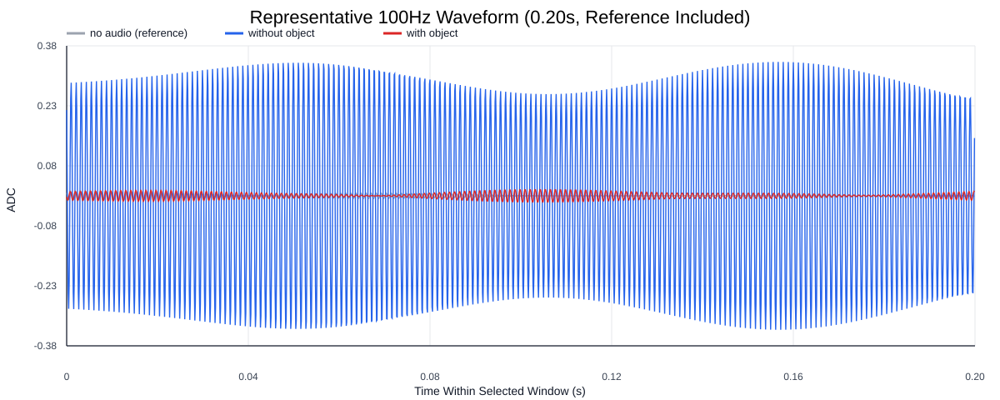
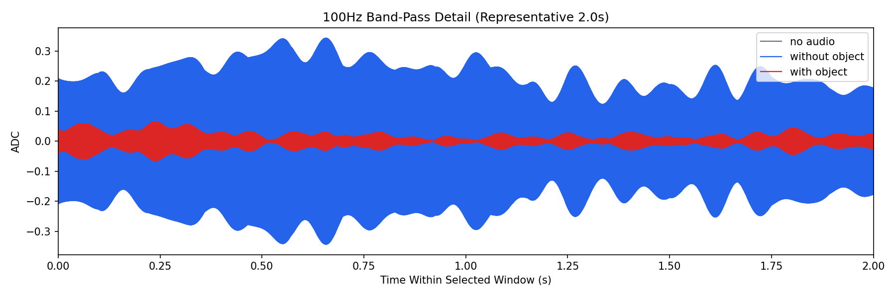
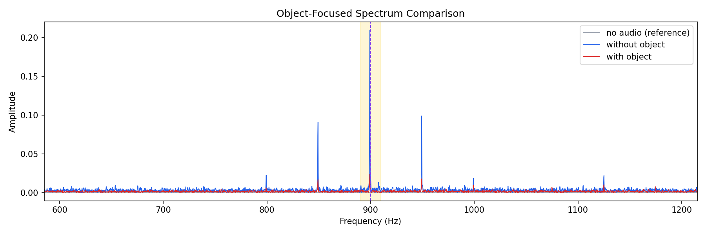
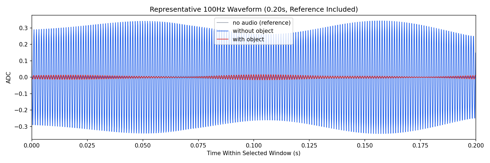

Background: F:\项目类文件夹\异物检测4.10\Data_Dual\frequency_sweep\0900Hz\repeat_02\raw\no_audio.csv
Without object: F:\项目类文件夹\异物检测4.10\Data_Dual\frequency_sweep\0900Hz\repeat_02\raw\without_object.csv
With object: F:\项目类文件夹\异物检测4.10\Data_Dual\frequency_sweep\0900Hz\repeat_02\raw\with_object.csv
| Metric | 无音频 | 100Hz无异物 | 100Hz有异物 | 无异物/无音频 | 有异物/无异物 | 有异物/无音频 |
|---|---|---|---|---|---|---|
| centered_rms | 0.034470 | 0.361772 | 0.160775 | 10.4954 | 0.4444 | 4.6643 |
| raw_target_amp | 0.000269 | 0.015298 | 0.000830 | 56.9088 | 0.0543 | 3.0890 |
| filtered_rms | 0.002681 | 0.157867 | 0.022678 | 58.8799 | 0.1437 | 8.4581 |
| filtered_target_amp | 0.000269 | 0.015298 | 0.000830 | 56.9087 | 0.0543 | 3.0890 |
| filtered_energy_ratio | 0.006050 | 0.190419 | 0.019896 | 31.4729 | 0.1045 | 3.2884 |
| window_filtered_target_amp_mean | 0.002544 | 0.217329 | 0.028069 | 85.4162 | 0.1292 | 11.0318 |
| window_filtered_target_amp_std | 0.002625 | 0.049903 | 0.014953 | 19.0109 | 0.2996 | 5.6965 |





